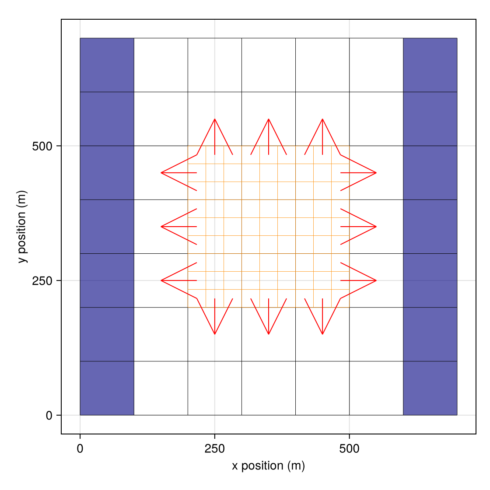
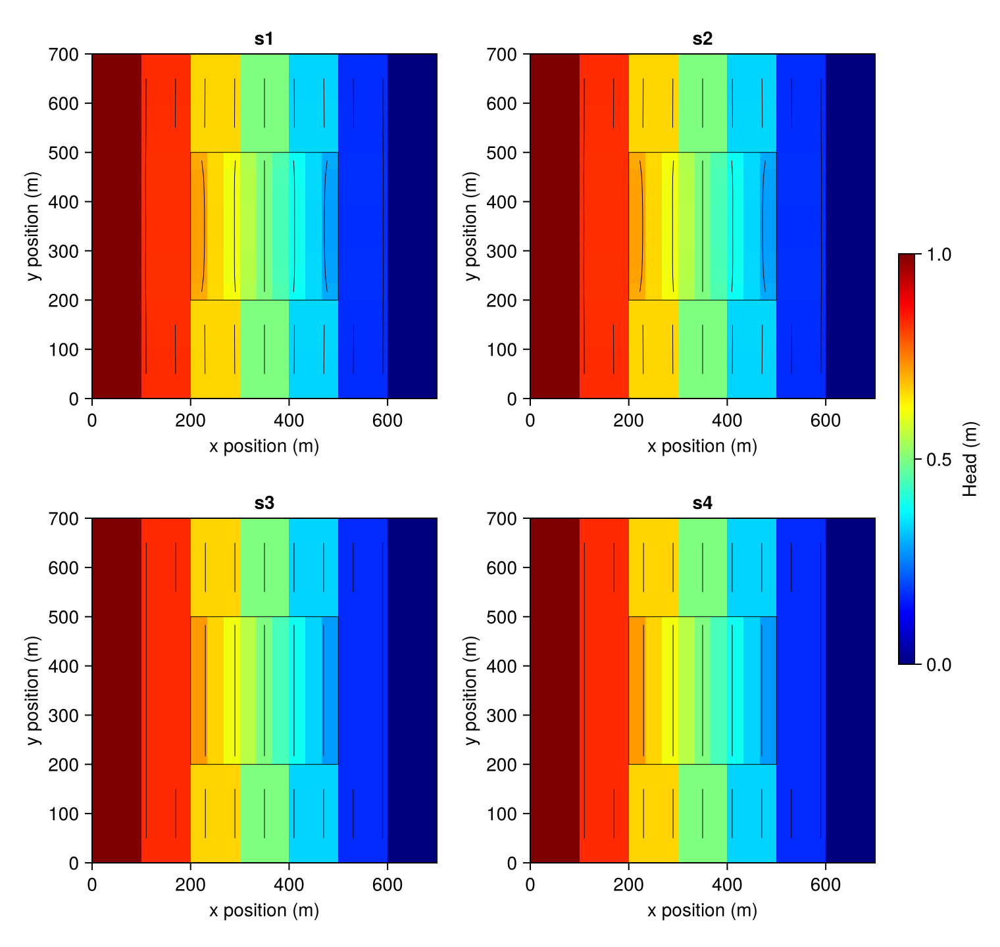
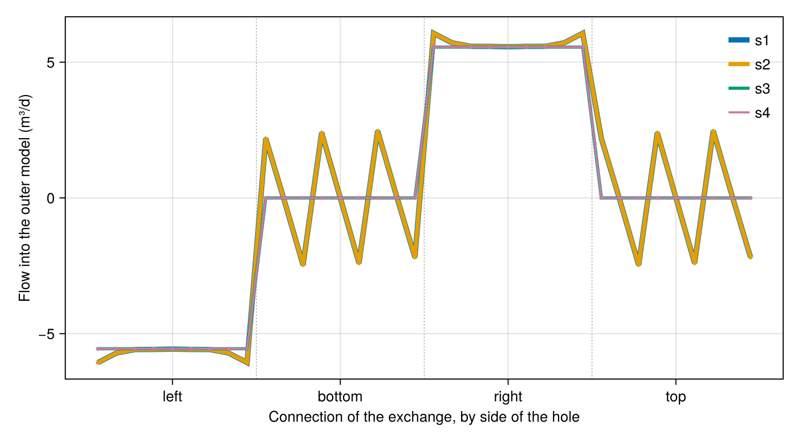
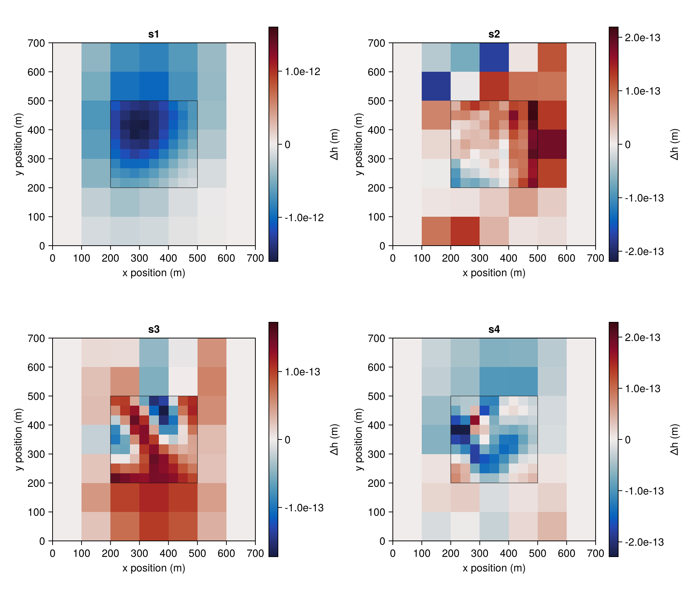

A nested model in a hole: GWF–GWF exchanges
A model of 700 m × 700 m and a finer model of 300 m × 300 m that fills a hole in it, connected by a GWF–GWF exchange. The outer model has 7 × 7 cells of 100 m, with the 3 × 3 cells in the middle inactive; the inner model has 9 × 9 cells of 33.3 m and its origin at (200 m, 200 m), so it sits in the hole. Both are one layer of 100 m thick, confined, with K = 1 m/d. The heads are fixed at 1 m in the first column of the outer model and at 0 m in its last column (CHD); the flow runs from left to right around the inner model and through it. The 36 connections of the exchange (9 on each side of the hole) carry the exchange conductance of MODFLOW 6 from the cell sizes, with ANGLDEGX and CDIST for the flow direction.
The MODFLOW 6 example ex-gwf-u1gwfgwf has four versions of this simulation that differ in the use of the XT3D option, which corrects the flow between cells for the angle between the cell face and the connection. It matters here, because the cells on both sides of the exchange do not line up:
| Version | XT3D in the models | XT3D on the exchange |
|---|---|---|
ex-gwf-u1gwfgwf-s1 | no | no |
ex-gwf-u1gwfgwf-s2 | yes | no |
ex-gwf-u1gwfgwf-s3 | yes | yes |
ex-gwf-u1gwfgwf-s4 | no | yes |
ModflowGPU runs both models and the exchange as one system of equations (the solution of the IMS file, as in MODFLOW 6), with the models' heads and flows in one file each (outer.hds, inner.hds, ...). With XT3D on the exchange, the coefficients of the exchange connections are those of MODFLOW 6's interface model (see Supported packages).
Input and the MODFLOW 6 runs
ExampleTools (docs/ExampleTools.jl in the repository) takes the input from the released mf6examples.zip, sets the tight closures of the parity tests in the IMS file, and runs MODFLOW 6.8.2.
using ModflowGPU, CairoMakie
versions = ["ex-gwf-u1gwfgwf-s$i" for i in 1:4]
mf6 = Dict(v => example_run(v) for v in versions)
[v => mf6[v].mode for v in versions]4-element Vector{Pair{String, String}}:
"ex-gwf-u1gwfgwf-s1" => "tight"
"ex-gwf-u1gwfgwf-s2" => "tight"
"ex-gwf-u1gwfgwf-s3" => "tight"
"ex-gwf-u1gwfgwf-s4" => "tight"The ModflowGPU runs
In :double and in :single precision on the CPU, with the default options.
runs = Dict(v => Dict(p => run_modflowgpu(mf6[v].dir, p) for p in (:double, :single)) for v in versions)
[v => (runs[v][:double].result.converged, length(runs[v][:double].result.steps)) for v in versions]4-element Vector{Pair{String, Tuple{Bool, Int64}}}:
"ex-gwf-u1gwfgwf-s1" => (1, 1)
"ex-gwf-u1gwfgwf-s2" => (1, 1)
"ex-gwf-u1gwfgwf-s3" => (1, 1)
"ex-gwf-u1gwfgwf-s4" => (1, 1)The models
The grids of both models on one map, with the constant-head cells of the outer model (navy) and the connections of the exchange (lines between the cell centres).
dir = mf6[versions[1]].dir
r = runs[versions[1]][:double].result
outer, inner = read_dis_grid(dir; model = "outer"), read_dis_grid(dir; model = "inner")
chd = budget_cells(outer, only(filter(m -> m.name == "OUTER", r.models)).budget_file, "CHD")
fig = Figure(; size = (560, 560))
ax = Axis(fig[1, 1]; aspect = DataAspect(), xlabel = "x position (m)", ylabel = "y position (m)")
map_cells!(ax, outer, chd; color = (BC_COLORS["CHD"], 0.6))
map_grid!(ax, outer)
map_grid!(ax, inner; color = :darkorange, linewidth = 0.4)
bf = open_budget_file(only(filter(m -> m.name == "OUTER", r.models)).budget_file)
conn = read_budget(bf, only(ModflowGPU.find_budget_records(bf; text = "FLOW-JA-FACE", paknam2 = "GWF-GWF_1")))
for (n, m) in zip(conn.id1, conn.id2)
(_, r1, c1), (_, r2, c2) = cell_of(outer, n), cell_of(inner, m)
lines!(ax, [outer.xc[c1], inner.xc[c2]], [outer.yc[r1], inner.yc[r2]]; color = :red, linewidth = 1)
end
save_figure(fig, "ex-gwf-u1gwfgwf-grid")
Heads
The heads of the outer and the inner model in the four versions, from ModflowGPU's head files, on one map and with one colour scale. The inner model has the colours of the hole.
heads(v, name) = read_head(open_head_file(only(filter(m -> m.name == uppercase(name), runs[v][:double].result.models)).head_file), 1)
fig = Figure(; size = (760, 720))
for (k, v) in enumerate(versions)
axk = Axis(fig[div(k - 1, 2) + 1, mod(k - 1, 2) + 1]; aspect = DataAspect(), title = "s$k", xlabel = "x position (m)", ylabel = "y position (m)", xticks = 0:200:600)
hm = models_heatmap!(axk, [outer, inner], [layer_values(heads(v, n), 1) for n in ("outer", "inner")]; colormap = :jet, colorrange = (0, 1))
foreach(g -> map_outline!(axk, g; linewidth = 0.5), (outer, inner))
map_contour!(axk, outer, layer_values(heads(v, "outer"), 1); color = :black, levels = 0.1:0.1:0.9, linewidth = 0.5)
map_contour!(axk, inner, layer_values(heads(v, "inner"), 1); color = :black, levels = 0.1:0.1:0.9, linewidth = 0.5)
k == 2 && Colorbar(fig[1:2, 3], hm; label = "Head (m)", height = Relative(0.5))
end
save_figure(fig, "ex-gwf-u1gwfgwf-head")
The flow across the exchange
The flow through each of the 36 connections of the exchange, positive into the outer model (negative into the inner one), as in the budget file of the outer model (FLOW-JA-FACE of package GWF-GWF_1, saved because the exchange has SAVE_FLOWS): ModflowGPU as lines, MODFLOW 6 as dots. The connections run along the left side of the hole (flow in), its bottom, its right side (flow out) and its top. The versions with XT3D on the exchange (s3, s4) have an even flow into and out of the inner model and none across its bottom and top, as the uniform flow field requires; without it (s1, s2) the connections of the bottom and top carry flows that alternate in sign and sum to zero. The lines of s1 and s2 coincide, as do those of s3 and s4: the flow across the exchange depends on the XT3D option of the exchange, not on that of the models.
exchange_flow(file) = read_budget(open_budget_file(file), only(ModflowGPU.find_budget_records(open_budget_file(file); text = "FLOW-JA-FACE", paknam2 = "GWF-GWF_1"))).q
fig = Figure(; size = (760, 420))
ax = Axis(fig[1, 1]; xlabel = "Connection of the exchange, by side of the hole", ylabel = "Flow into the outer model (m³/d)", xticks = ([5, 14, 23, 32], ["left", "bottom", "right", "top"]))
vlines!(ax, 9.5:9:27.5; color = :gray, linestyle = :dash, linewidth = 0.5)
for (k, v) in enumerate(versions)
q = exchange_flow(only(filter(m -> m.name == "OUTER", runs[v][:double].result.models)).budget_file)
q6 = exchange_flow(joinpath(mf6[v].dir, "outer.cbc"))
lines!(ax, 1:36, q; color = Makie.wong_colors()[k], linewidth = 6 - k, label = "s$k")
scatter!(ax, 1:36, q6; color = Makie.wong_colors()[k], markersize = 5)
end
axislegend(ax; position = :rt, framevisible = false)
save_figure(fig, "ex-gwf-u1gwfgwf-flow")
Comparison with MODFLOW 6
The head differences between ModflowGPU in :double precision and MODFLOW 6, both models on one map, in the four versions.
heads6(v, name) = read_head(open_head_file(joinpath(mf6[v].dir, name * ".hds")), 1)
d = ["s$k" => [heads(v, n) .- heads6(v, n) for n in ("outer", "inner")] for (k, v) in enumerate(versions)]
save_figure(models_difference_map([outer, inner], d; ncols = 2, unit = "m", xlabel = "x position (m)", ylabel = "y position (m)"), "ex-gwf-u1gwfgwf-difference")
The largest head and budget differences over both models, for each version, in both precisions, next to the values of the parity table, and the wall times (CPU: this build, including compilation for the first run of the session; GPU: the parity table, AMD Radeon RX 7800 XT). The budget comparison covers all flows of the budget files, including the exchange lists, and the listing tables, relative to the total inflow of the step. Version s1:
stats = Dict(v => Dict(p => (; cmp = compare_models_with_mf6(mf6[v].dir, runs[v][p]), runs[v][p].time) for p in (:double, :single)) for v in versions)
comparison_table("ex-gwf-u1gwfgwf-s1", stats["ex-gwf-u1gwfgwf-s1"])| Preset | max |Δh| (m), this build | max |Δh| (m), parity table | Budget, this build | Budget, parity table | CPU time, this build (s) | GPU time, parity table (s) |
|---|---|---|---|---|---|---|
:double | 1.6e-12 | 1.6e-12 | 6.6e-13 | 6.6e-13 | 0.25 | 0.01 |
:single | 1.4e-07 | 1.4e-07 | 1.7e-07 | 1.7e-07 | 0.05 | 0.01 |
Budget: the largest difference of a budget-file flow or a listing-table rate, relative to the total inflow of its time step.
The same per model.
models_comparison_table(stats["ex-gwf-u1gwfgwf-s1"])| Model | Preset | max |Δh| (m) | Budget | Percent discrepancy |
|---|---|---|---|---|
OUTER | :double | 1.0e-12 | 3.8e-13 | 1.3e-11 |
OUTER | :single | 9.1e-08 | 6.7e-08 | 6.7e-06 |
INNER | :double | 1.6e-12 | 6.6e-13 | 8.8e-10 |
INNER | :single | 1.4e-07 | 1.7e-07 | 5.9e-05 |
Version s2
comparison_table("ex-gwf-u1gwfgwf-s2", stats["ex-gwf-u1gwfgwf-s2"])| Preset | max |Δh| (m), this build | max |Δh| (m), parity table | Budget, this build | Budget, parity table | CPU time, this build (s) | GPU time, parity table (s) |
|---|---|---|---|---|---|---|
:double | 2.2e-13 | 2.2e-13 | 4.1e-13 | 4.1e-13 | 1.84 | 0.09 |
:single | 5.7e-08 | 5.7e-08 | 2.3e-07 | 2.3e-07 | 1.88 | 1.04 |
Budget: the largest difference of a budget-file flow or a listing-table rate, relative to the total inflow of its time step.
models_comparison_table(stats["ex-gwf-u1gwfgwf-s2"])| Model | Preset | max |Δh| (m) | Budget | Percent discrepancy |
|---|---|---|---|---|
OUTER | :double | 1.8e-13 | 4.1e-13 | 5.7e-12 |
OUTER | :single | 3.1e-08 | 8.6e-08 | 8.0e-06 |
INNER | :double | 2.2e-13 | 3.4e-13 | 9.3e-11 |
INNER | :single | 5.7e-08 | 2.3e-07 | 5.1e-06 |
Version s3
comparison_table("ex-gwf-u1gwfgwf-s3", stats["ex-gwf-u1gwfgwf-s3"])| Preset | max |Δh| (m), this build | max |Δh| (m), parity table | Budget, this build | Budget, parity table | CPU time, this build (s) | GPU time, parity table (s) |
|---|---|---|---|---|---|---|
:double | 1.7e-13 | 1.7e-13 | 4.4e-13 | 4.4e-13 | 0.03 | 0.01 |
:single | 1.9e-07 | 1.9e-07 | 2.3e-07 | 2.3e-07 | 0.01 | 0.01 |
Budget: the largest difference of a budget-file flow or a listing-table rate, relative to the total inflow of its time step.
models_comparison_table(stats["ex-gwf-u1gwfgwf-s3"])| Model | Preset | max |Δh| (m) | Budget | Percent discrepancy |
|---|---|---|---|---|
OUTER | :double | 1.1e-13 | 8.3e-14 | 1.0e-12 |
OUTER | :single | 1.2e-07 | 8.2e-08 | 7.9e-06 |
INNER | :double | 1.7e-13 | 4.4e-13 | 8.4e-11 |
INNER | :single | 1.9e-07 | 2.3e-07 | 1.3e-04 |
Version s4
comparison_table("ex-gwf-u1gwfgwf-s4", stats["ex-gwf-u1gwfgwf-s4"])| Preset | max |Δh| (m), this build | max |Δh| (m), parity table | Budget, this build | Budget, parity table | CPU time, this build (s) | GPU time, parity table (s) |
|---|---|---|---|---|---|---|
:double | 2.3e-13 | 2.3e-13 | 1.4e-12 | 1.4e-12 | 0.00 | 0.01 |
:single | 1.9e-07 | 1.9e-07 | 2.3e-07 | 2.3e-07 | 0.00 | 0.01 |
Budget: the largest difference of a budget-file flow or a listing-table rate, relative to the total inflow of its time step.
models_comparison_table(stats["ex-gwf-u1gwfgwf-s4"])| Model | Preset | max |Δh| (m) | Budget | Percent discrepancy |
|---|---|---|---|---|
OUTER | :double | 9.8e-14 | 1.3e-13 | 1.1e-12 |
OUTER | :single | 1.2e-07 | 8.2e-08 | 7.9e-06 |
INNER | :double | 2.3e-13 | 1.4e-12 | 8.3e-11 |
INNER | :single | 1.9e-07 | 2.3e-07 | 1.3e-04 |